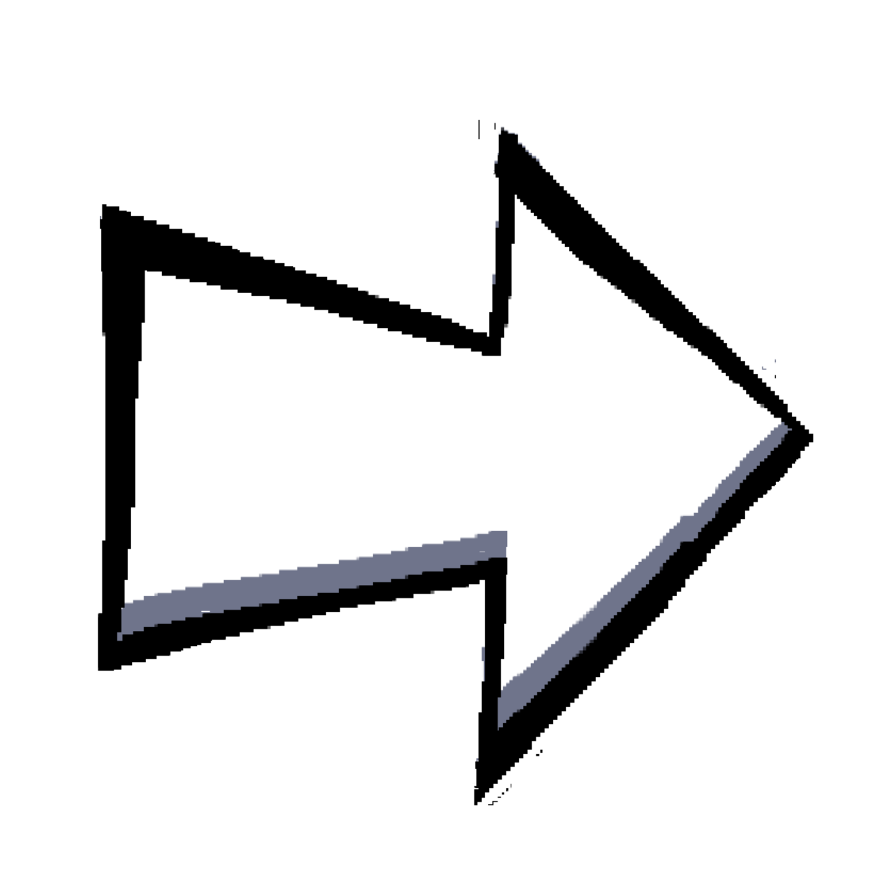

EL ARTE DE YAREH DEVIL
PROCESO DE ANIMACION

Posiblemente el proceso que mas disfrute a la hora de trabajar para este proyecto.
Se sabe bastante que la animacion es un medio que nos ayudan a dar vida nuestras creaciones y a transmitir de manera más efectiva las acciones de nuestros personajes. Quizas este sea el unico apartado que nacio gracias a mi capricho de hacer lucir el proyecto mucho mas vistoso para mi gusto.
Menciono que fue capricho porque casi no me especializo en este medio de la animacion y siendo sincero, tampoco es mi fuerte. Bueno, no ignoro que podre tener mis conocimientos, pero una de las razones por la cual lo considere como un reto, fue sobre todo debido al hecho de que mi entorno de trabajo seria absolutamente nuevo con un programa que usualmente utilizo solo para ilustrar y no animar.
Este programa seria krita.

Aun asi, me tome mi tiempo para poder adaptarme a las herramientas y funciones que me permitieran animar de manera mas eficiente.
una vez estableci los cuadros por fotograma para cada animacion, comenze a darle vida a los sprites. Hasta ese entonces se trataban de solo ilustraciones estaticas.
El proceso de animacion fue bastante entretenido y a la vez un poco tedioso. Aun asi, me senti muy satisfecho con la mayoria de los resultados.
Animaciones para yareh dude
Estas animaciones abarcan diversas acciones que el personaje puede realizar en el juego. Incluso las mas sencillas, como quedarse quieto o estatico (idle)


Animaciones para los Evil sausage.

Misceláneos y otros elementos del juego
Entonces, una vez habia sentido que los personajes no necesitan ningun tipo añadido mas en la elaboracion de sprites; fue cuando decidi comenzar a trabajar estos detalles "secundarios" que ayudan a desarrollar la caracterizacion del juego. En los que diferentes elementos como el fondo (o background) son fundamentales.
Siempre habran elementos cuya implementacion favorece un mayor impacto visual en la inversion de un proyecto. Estos elementos incluso pueden tener, o no; una clasificacion sobre de lo que uno pensaria que son las principales categorias al abordar dentro de un juego en cuanto apartado artistico.
Como se suele decir; la perfeccion esta en los pequeños detalles. Esto ha sido algo que yo mismo he notado con el tiempo; enfocarse en ellos siempre daran un impacto de autenticidad. Ya sea cualquier producto en el que se le aplique, una buena revision de calidad siempre proyectaran una buena impresion hacia los demas.
En cuestion, suelen ser cosas que solemos dejar a un lado pero que siguen siendo igual de importantes..
Elaboracion del fondo (background)
Despues de imaginarme como seria el mundo donde se ubicaria el juego, se me vino a la mente un lugar desolado o presa de un regimen opresor.
Rapidamente comenze a bocetear esta idea para tener en mente un mejor paisaje de como podria verse en el juego.

Con los fondos pasa algo muy curioso.
aveces para dar una mejor sensacion de profundidad, las ilustraciones que usualmente representan los backgrounds suelen dividirse por capas (cielos, paisajes, montañas, etc.)
Pero estaba del todo seguro si este procedimiento se implementaria en el juego. Sobre todo porque en ese punto ya estabamos cortos de tiempo.
Normalmente por la falta de certeza uno descartaria esta idea.
pero no fue mi caso.
Ilustrando el fondo por capas
En un lienzo en blanco comence definir el mapa.


Los OTROS elementos del proyecto
Debido al tiempo ajustado por la que estabamos pasando, el contenido de este apartado no sera tan grande como los otros.
Aqui solo mostrare algunas cosas que se han descartado o de paso no llegaron a mostrarse en el juego.
Decorados del mapa
Esto fue uno de los apartados que tuve que sacrificar para el juego.
En la mayoria de las ocasiones, y al igual que pasa con los backgrounds (fondos); Se busca la ayuda de contactos. Usualmente es otro artista o asociado el que trata estos aspectos.
Pero yo me conozco lo demasiado para reconocer que soy lo suficientemente competente y persistente como para abordar estos elementos.
(en realidad es porque los unicos que trabajan para este proyecto somos yo y el director)


Items

Armamento
Para las armas de fuego que utilizarian nuestros personajes, nos basamos en armas reales super peligrosas
Mi objetivo aqui era tanto basarme en estas armas como su estructura, y a su vez, darles un toque unico o mas rustico. Similar a la sensacion de intentar visualizar algo que no recuerdas del todo, Inevitablemente en el proceso exagerando los razgos mas llamativos de ese tal algo.


Nuestros compañeros con sus armas correspondientes.


(con sus tamaños reales)
